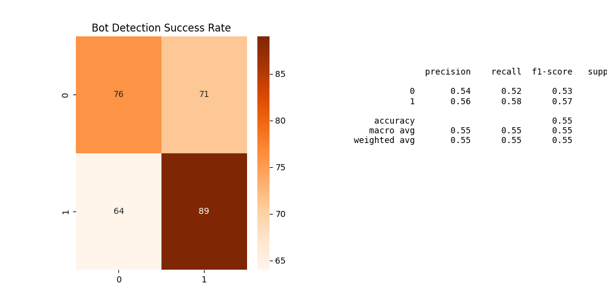

A project by Naitik Sk
In today's digital landscape, the insidious spread of misinformation by automated "botnets" poses a significant threat. My recent project tackled this challenge head-on by developing a Graph Neural Network (GNN) to identify coordinated bot activity, using the Aditya Goyal Twitter Dataset. This wasn't just an exercise in coding; it was a deep dive into how advanced AI can protect our online spaces.
KeyError.
Despite meticulously moving my bot_detection_data.csv file, the Python script repeatedly failed, insisting that crucial data columns like favourite_count or Follower Count didn't exist.
This wasn't a simple typo; it was a fundamental mismatch between my code's expectations and the dataset's actual column names.
Here are my results from the Aditya Goyal Dataset:

This project's significance extends far beyond academic exercise. It demonstrates the power of GNNs in enabling crucial real-world interventions:
View the full source code on my GitHub Repository.